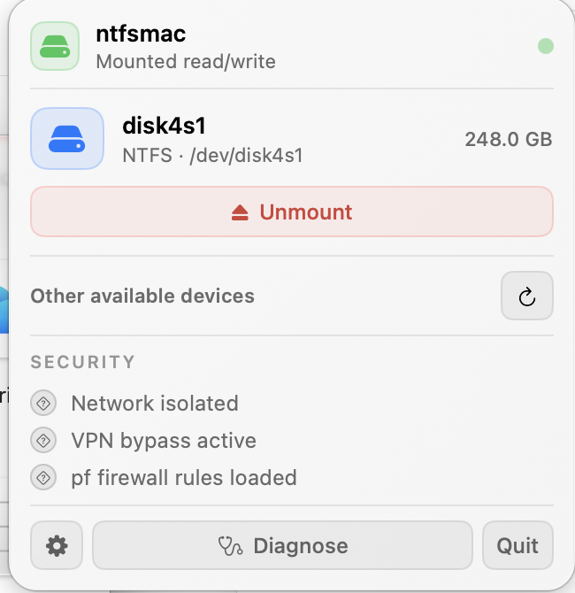

Download
Get the latest signed Apple Silicon DMG from GitHub Releases.
Open source · macOS · Apple Silicon
Mount NTFS drives read/write from a focused native menu-bar app, with isolated networking and diagnostics you can actually inspect.
Latest published release: v3.0.0
Small app, serious boundary
ntfsmac runs the filesystem in a lightweight Linux virtual machine and exposes the result locally to macOS. The interface keeps mount state, safety checks and recovery close at hand.

Installation
Get the latest signed Apple Silicon DMG from GitHub Releases.
Drag ntfsmac to Applications and open it.
Approve ntfsmac Helper and Full Disk Access when macOS asks.
Upgrading from an older build replaces the previous helper. macOS may ask you to approve Full Disk Access again.
Security & privacy
The app checks GitHub at most once every 24 hours for the latest published release. It never downloads or installs updates on its own. Automatic network errors stay silent and mount operations do not depend on the check.